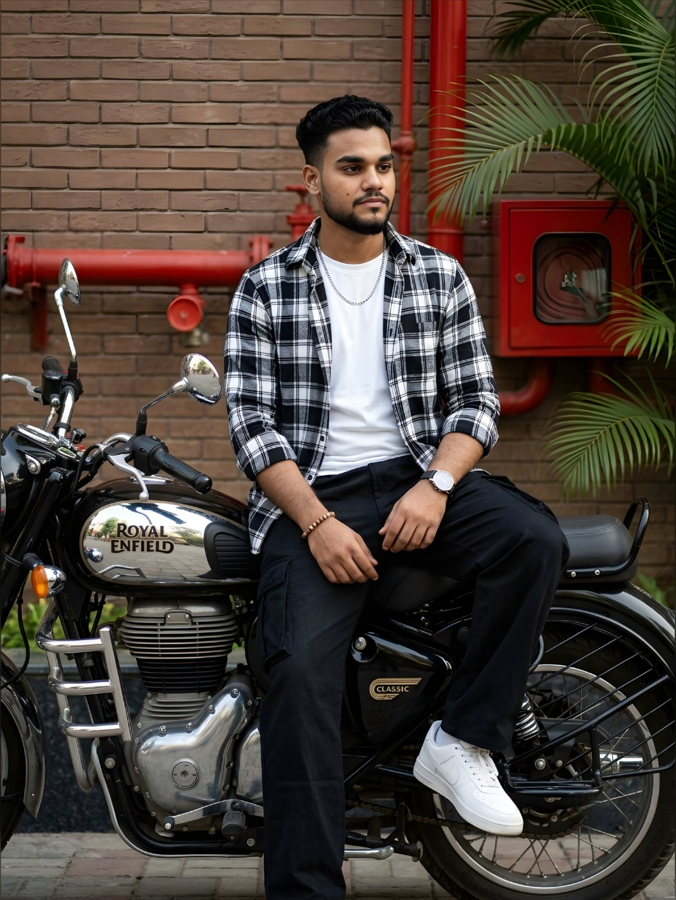
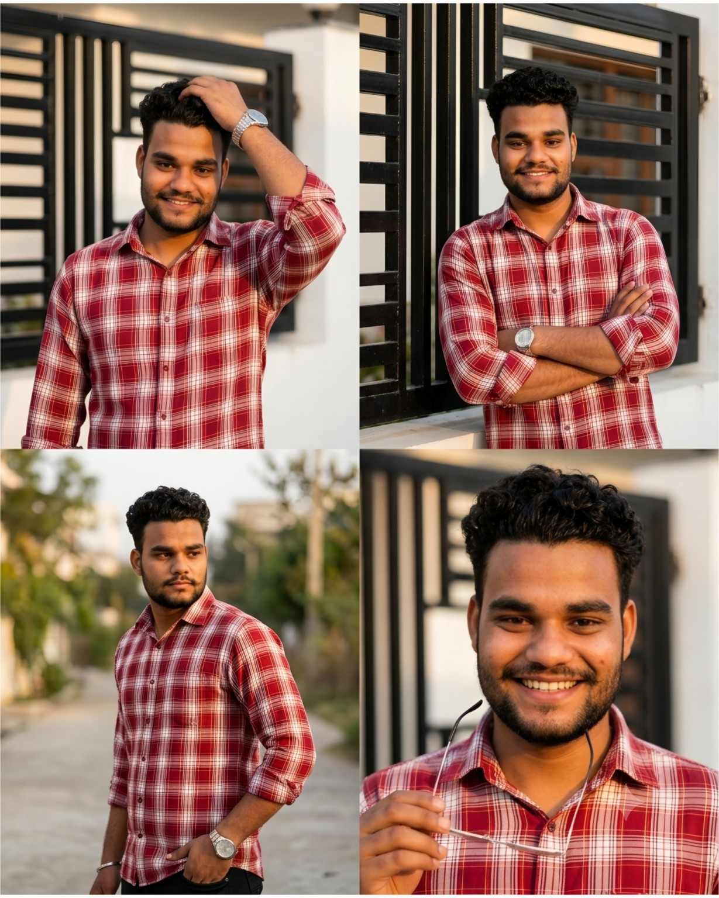

YASH
SOOD
Enthusiastic and detail-oriented B.Com graduate with strong communication, customer handling, and problem-solving skills. Knowledge of Human Resource Management, Auditing, MS Office, and business operations.

Profile
Quick learner with a customer-focused approach, ready to gain practical experience and contribute to organizational growth.
Who I am
Enthusiastic and detail-oriented B.Com graduate with strong communication, customer handling, and problem-solving skills. Knowledge of Human Resource Management, Auditing, MS Office, and business operations. Quick learner with a customer-focused approach and ability to work effectively in team environments. Seeking opportunities in HR, Office Administration, or Customer Support roles.
Resume Snapshot
What I bring
Skills listed directly from the resume, with no invented ratings or experience.
Academic journey
Bachelors of Commerce
Gyan Mahavidyalay, Agra Road, Aligarh (Affiliated to Raja Mahendra Pratap Singh University)
CGPA: 6.90 · First Division
Intermediate (12th Grade)
K.P. Inter College, Aligarh · U.P. Board of Education
Percentage: 65.66%
Starting my career
The resume identifies Yash Sood as a fresher and states a goal of gaining practical experience in HR, Office Administration, or Customer Support while contributing to organizational growth.
Key strengths
Beyond work
Personal side
Photography and editing are among the interests listed on the resume.



Let's connect
Open to opportunities in HR, Office Administration, and Customer Support.
Get in touch
For relevant opportunities, professional connections, or career discussions, contact me directly.